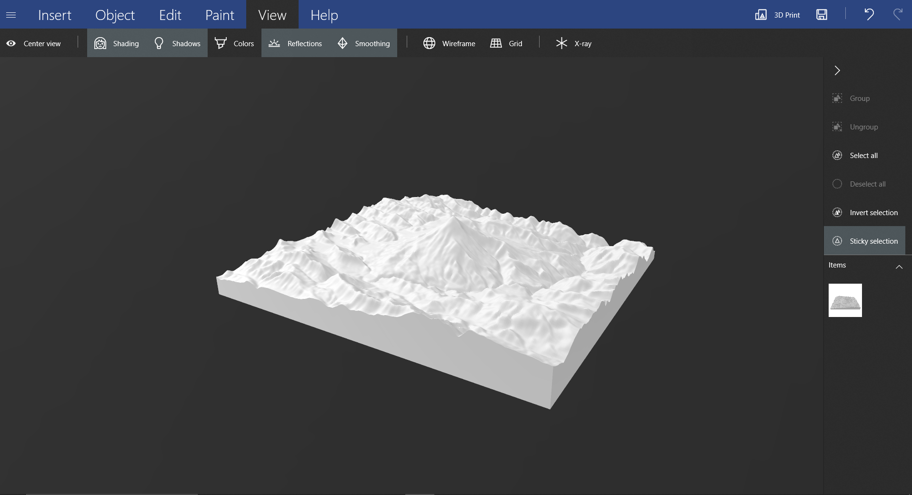

Creating a 3D terrain model using QGIS and Prusa MK4 3D Printer in 3D Visualization course.
3D Model Printing
For this 3d practice, I decided to visualise the Mount Damavand, the heighest peak in Iran. Mount Damavand rises within the Alborz range in northern Iran, separating the Iranian plateau to the south from the Caspian Sea in the north. This range rises as a result of the collision between the Arabian and Eurasian tectonic plates. This sort of collision is similar to the collision between the Indian and Eurasion plates to the east, which is causing the Himalaya to rise and does not usually create volcanic activity.
I used SRTM30 DEM from NASA to access the terrain, acquired from OpenTopography DEM downloader plugin in Qgis. By Using the DEMto3D plugin in QGIS, it was possible to convert the terrain to the 3D object. The model was exported as.stl format and then openned in 3D Builder to apply minor modifications. Then the model was transferred to Prusa software to modify the printing specifications and finalise the procedure.
Department of Geoinformatics in UPOL provides number of 3D printers to print different models. For this model, we used Prusa MK4 3d printer. The result is visible below.